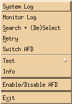

![[closeup of mon_ctrl header line]](../images/mon_ctrl_head.png)
To control and monitor remote AFDs there is an X11 interface, with the following appearance:
As shown this dialog is divided into three main areas: menu, heading and status.
The menu area has four pull down buttons: Monitor, RView, RControl and Setup. If your mon_ctrl window does not have all buttons shown and described here, then the system administrator did not allow you to use this function.
The heading is just a quick reminder of what the fields in the connection area mean:
| AFD | The alias name of the AFD that is being monitored. |
|---|---|
| fc | This is the file counter field. It shows the total number files that are still to be distributed. |
| fs | The total file size that is still to be distributed. |
| tr | Shows the overall current transfer rate. |
| fr | Shows the overall current file rate in files per second. |
| jq | The number of jobs in the queue. |
| at | The total numbers of active transfers. |
| ec | This is the total number of errors. It does NOT count the errors of a host that is red. |
| eh | This is the total number of hosts that are red. |
The status area is the actual area which monitors and controls the other AFD's. The meaning of each field is shown below:
| 1 | AFD alias | This field holds the name of the AFD alias. The background
color indicates the current status of the connection:
|
|||||||||||||||||||||
| 2 | AMG | LED to show current status of process AMG (Automatic Message
Generator).
 so
that the AFD can function properly. so
that the AFD can function properly.
|
|||||||||||||||||||||
| 3 | FD | LED to show current status of process FD (File Distributor).
so
that the AFD can function properly.
|
|||||||||||||||||||||
| 4 | Archive Watch | LED to show current status of process Archive Watch.
|
|||||||||||||||||||||
| 5 | System Log | Radar that shows the five last type of messages in the system log. It
can have the following colors: 
|
|||||||||||||||||||||
| 6 | File Counter | Total number of files that still have to be send. | |||||||||||||||||||||
| 7 | File Size | Total number of bytes that still have to be send. The last character always shows the current unit: B for Bytes, K for Kilo Bytes, M for Mega Bytes, G for Giga Bytes and T for Tera Bytes. | |||||||||||||||||||||
| 8 | Transfer Rate | Displays the total current transfer rate of all connections. | |||||||||||||||||||||
| 9 | File Rate | Displays the total number of files send per second. | |||||||||||||||||||||
| 10 | Jobs in Queue | Displays the number of jobs in the queue. | |||||||||||||||||||||
| 11 | Active Transfers | The number of process currently distributing data. | |||||||||||||||||||||
| 12 | Error Counter | Number of errors that occurred. It does not include the errors of red hosts (ie. failed hosts), otherwise the numbers here would get so large that one does not see if a new one starts to get errors. | |||||||||||||||||||||
| 13 | Error Hosts | Number of hosts that are red. | |||||||||||||||||||||
| 14 | Error Host Bar | Displays a bar for the number of hosts that are red. The color of the bar will always be red. | |||||||||||||||||||||
| 15 | Active Transfers Bar | Displays a green bar to display the number of active transfers, that will increasingly turn blue the more transfers are active. A deep blue bar in it full length indicates that the FD has reached its maximum number of process that may be forked to distribute data. | |||||||||||||||||||||
| 16 | Transfer Rate Bar | Displays a yellow bar to display the overall current transfer rate graphically. |
Selecting can be done by either holding down the shift key and pressing the left mouse button (temporary selection) or by holding the ctrl key and the left mouse button (permanent selection). The background of the line will change to black or grey respectively.
|
Copyright © 2000, 2001 by H.Kiehl Holger.Kiehl@dwd.de Last updated: 04.06.2001 |
![[red dot]](../images/reddot.gif) Index Index |
Home |